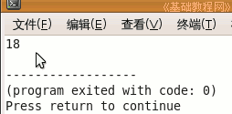
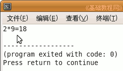
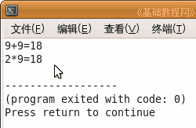

C 编程基础教程
作者：TeliuTe 来源：基础教程网
程序可以处理各种数据，我们给程序提供数据，然后得到预期的结果，下面我们来看一个练习；
1、启动 Geany
1）点菜单“应用程序－编程－Geany”启动 Geany ，新建一个 c 源程序；
2）点菜单“文件－另存为”命令，以“shuju”为文件名，保存文件到自己的文件夹；
2、输入程序代码
1）在下面的蓝色代码区域里，输入一行 printf ("%d",18);
|
#include <stdio.h> int main(int argc, char** argv) { printf ("%d",18); return 0; } |
2）保存，编译，生成后，运行将显示一个数字18，这就是数值数据， int 表示整型，%d 表示十进制整数；

3）关闭返回到程序窗口，在 printf 前面按回车键，插入一行，
输入一行 printf ("2*9="); 分号别漏了；
|
printf ("2*9="); printf ("%d",18); |
4）保存，编译，生成，运行，这次前面加上了带双引号的叫字符串数据，用 char 表示字符型；

5）再在第一个 printf 前面按一下回车键，插入一个空行，输入 printf ("9+9=%d\n",9+9);
| printf ("9+9=%d\n",9+9); |
6）这一行前面的双引号是字符串，字符串照原样显示，后面的是数字加法运算，
%d 表示后面是整数，\n 表示行末最后加一个回车换行符，如果不加就跟下一行连一起了；
7）保存，编译、生成后运行，现在显示的是两行了；

8）这儿要求记住：加了双引号的都是字符串，里面可以有字母和数字，而0～9所组成的是数字，百分号是格式控制符号；
| #include <stdio.h> int main(int argc, char** argv) { printf ("9+9=%d",9+9); printf ("2*9="); printf ("%d",18); return 0; } |
本节学习了 c 中常见的数值数据和字符串数据类型，如果你成功地完成了练习，请继续学习下一课内容；
本教程由86团学校TeliuTe制作|著作权所有
基础教程网：http://teliute.org/
美丽的校园……
转载和引用本站内容，请保留版权信息和本站链接。